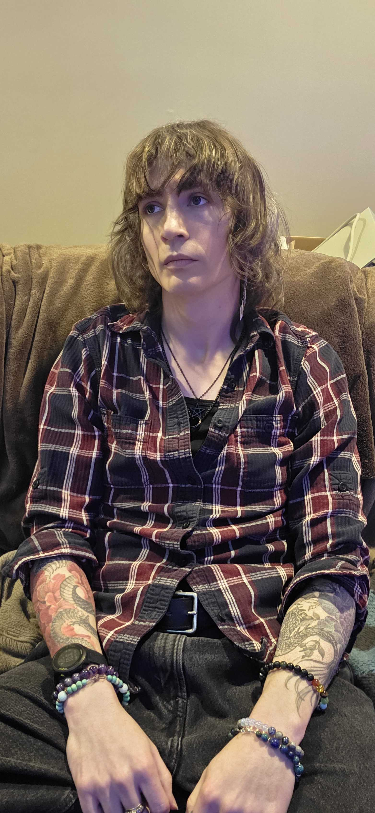

Jolly's void

Jolly
In this current phase of life I am trying to grow my creativity.
Growing up
I attained my memory in a small lakeside town called Greenbelt in Texas. I spent my time pretending to be Link, chopping plants down with kitchen knives while wearing fluffy snow boots in the middle of summer because damn it, I needed that dash (a link to the past iykyk).
My family and I moved to Canadian TX which was a small quiet lovely town. This is where I would consider the majority of my childhood was spent. I went to school here until I was a Sophmore and then well that story will be in a different section. I rode my bike around town, went to the river that was nearby, played at the duck ponds, went to the pool, video games, Saturday morning/latenight cartoons, go-karts, paintball, stick fighting, and just causing hell. I walked to school most days no matter the weather. It could be freezing and I would still walk to school. I think back and I'm glad I had that experience. It's hard to describe what a walk every day can do for you.
Me
I thought about making this an entire short biography, but I think I'll leave it as is, an ode to the ways before mass social media. When we could explain our entire life in a snippet of our past. I'll add more to this later.
My beliefs
I've made up my own faith that evolved from my first memory. If you gamble to know the truth and if either one works, then why not believe?
In my first memory I recall watching my body grow up and eventually I fell into it, awakening for the very first time. I think about this moment a lot because I felt a moment of contemplation, do I want to experience this life?
Imagine if you knew that you chose to live this life. Would you think differently about your choices and what you do? For me if I chose this life for a reason I'd live having faith I'd see it. If I chose this life on a whim, then I'll enjoy it the best I can.
My life has been ups and downs, but I can tell you that I have always found a way to love my life. I love the experience. I love the luck I've had through my youth to have survived it. I love the friends and people I've met. I love that I've put myself back together from the most devastating times of my life.
My greatest failure, is that I don't know how to pass this feeling on to others through words. I've journaled my entire life hoping to capture what makes me, me.
I've determined some things can't be put into words, and I believe that is the truth with many feelings. The best way to understand is to feel it and all I can do is show my tenacity to enjoy life by example.
All that to say I believe I made a choice to live this life with or without reason. I'm going to enjoy it to the end.
You could challenge my beliefs, but beware, I am a delusional amount of whimsy at this stage in life. I'm afraid of making to much sense.
Oh and if there are great gods and stars pulling strings and if consciousness is meant for climbing until we understand we are all one, then perhaps we've already experienced all that and just long for the days of living. Because this life, is fun.
I want you to love my life and I will love yours.